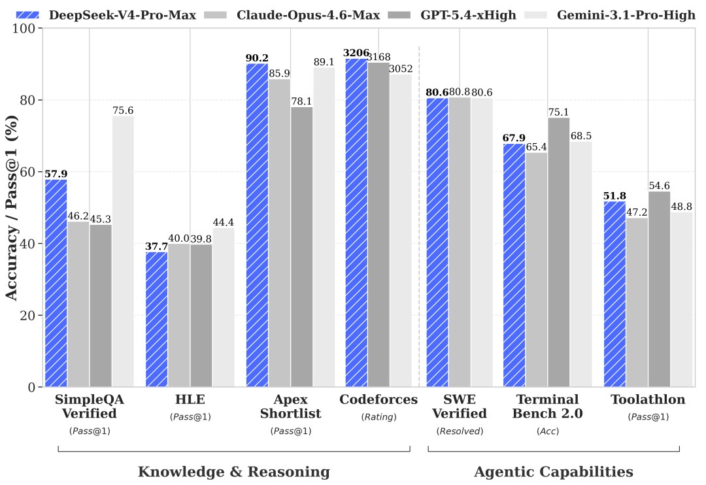

一、导语：一笔可能刷新纪录的融资
10 月 6 日，彭博社消息——DeepSeek 新一轮融资已接近敲定，募资规模至少 800 亿元人民币，大幅超出其自身原定约 500 亿元的目标。知情人士称，按照已签署的投资条款书，本轮最终总额有可能逼近 1000 亿元，而腾讯与宁德时代是出资规模最大的几家投资方，交易很快就会完成交割。这笔钱，将直接为该公司计划在 2027 年初启动的里程碑式 IPO 铺路。
二、背景分析：为什么这轮融资值得单拎出来看
第一，体量。DeepSeek 最初的募资目标约为 500 亿元，而实际认购远超预期；据报，公司原本希望对应的估值约为 5000 亿元。在上一轮（今年夏天，规模 500 亿元）里，DeepSeek 的估值约为 3500 亿元，创始人梁文锋也继续出资——也就是说，短短几个月，市场愿意给它更高一级的定价。
第二，触发点。这轮认购情绪的转折，来自最新模型的成功。自 V4-Flash 推出后，公司发展势头明显加快，该模型重塑了业界对"性价比"的认知，被认为已经可以同 Anthropic、OpenAI 等海外头部厂商展开竞争。技术叙事变成资本叙事，这是 2026 年 AI 行业反复上演的戏码。
三、核心内容：金额、算力与时间线
先把数字摆齐。本轮目标由约 500 亿元上调，落定规模至少 800 亿元，上限可能逼近 1000 亿元；IPO 目标时间点为 2027 年初。
算力是这笔钱最主要的去处。DeepSeek 正在内蒙古建设一座大型数据中心，计划在这里部署至少 16 万枚华为高端 AI 加速芯片，有望建成目前规模数一数二的华为 AI 芯片算力集群。它同时还发布了与华为联合开发、用于 AI 芯片编程的软件，借此与这家硬件厂商深度协作，正式踏入一块全新的业务领域——从"租算力"转向"造算力"，是这轮扩张最值得注意的信号。
资本层面，老股东的加注意图也很清晰。腾讯在上一轮融资中就已经是这家初创公司的最大投资方，出资 100 亿元，它希望把 AI 能力整合进旗下各个产品平台；宁德时代则可能看好面向数据中心等场景的算力零部件赛道，希望布局这块日渐景气的市场。
创始人个人财富同步水涨船高：今年夏天 DeepSeek 完成首轮外部融资之后，梁文锋的个人净资产翻了一倍以上，大约达到 360 亿美元。这家公司脱胎于他创办的对冲基金幻方量化，早期发展的大部分资源也来自幻方。

四、各方反应：投资人抢筹，同行抢跑
认购热情最直接的证据，就是"超额"。据报道，DeepSeek 最初的募资目标约 500 亿元，但随着最新模型发布取得成功，市场投资者的认购热情远超预期，最终规模被推高。腾讯与宁德时代的角色分工也耐人寻味：一个要模型能力，一个要算力硬件，两家押注的是同一条产业链的不同环节。
创始人本人的态度则给这笔钱定了调——据彭博社，梁文锋今年至少在一场投资者会议上表态：在向着实现通用人工智能这一长远目标迈进的同时，他会持续坚持开源 AI 模型的开发；这位对冲基金出身的管理者明确表示，自己首要目标是不断拓展技术的边界，而非优先追求商业化变现。
「在向着实现通用人工智能这一长远目标迈进的同时，他会持续坚持开源 AI 模型的开发……首要目标是不断拓展技术的边界，而非优先追求商业化变现。」
竞争对手也没闲着。月之暗面（Moonshot）在完成一轮估值 500 亿美元的融资之后，同样把 IPO 目标定在了 2027 年初。两家中国头部 AI 公司，几乎踩着同一个时间表冲向公开市场。
五、深度解读：这是一场"算力 + 开源 + 上市"的三重竞速
第一层是算力自主。16 万枚华为芯片的集群，把 DeepSeek 与国产硬件生态绑在了一起。当外部先进算力获取不确定时，"自建 + 国产芯片"既是成本选择，也是供应链安全的必需项。
第二层是开源策略的商业化路径。坚持开源、把技术边界放在商业化之前，短期看是放弃了一部分直接收入，但配合 IPO，它换来的是开发者生态、行业心智和更高的资本溢价。
第三层是上市节奏。DeepSeek 与月之暗面同时把时间点瞄向 2027 年初，意味着中国 AI 公司正集体从"烧钱研发"切换到"资本兑现"阶段。谁先上市、拿到多少估值，会直接影响下一轮人才与算力的争夺。
当然，风险也在：知情人士提醒，谈判虽近收尾，最后阶段仍可能改动部分交易细节；而大额算力投入一旦碰上模型迭代不及预期，现金流压力会迅速显现。
六、总结
一句话：DeepSeek 用至少 800 亿元、可能逼近 1000 亿元的融资，把"开源模型 + 国产算力 + 2027 年 IPO"绑成一条完整路径——这不只是一次融资，而是中国 AI 头部玩家从技术竞赛转向资本竞赛的发令枪。